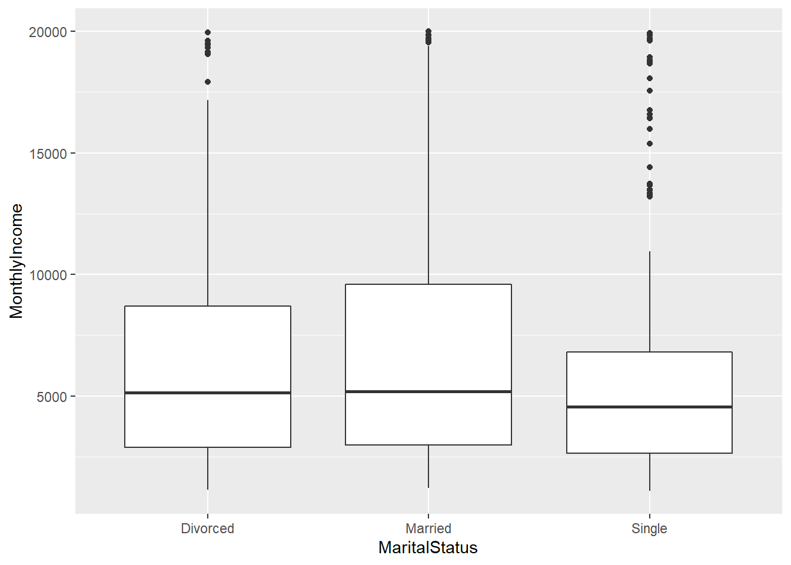

CaseStudy02.Rmd
Roger Tchegui
8/2/2021
## First Question of interest: Answers to Case Study 2 Tasks
###Introduction to this project: DDSAnalytics is an analytics company that specializes in talent management solutions for Fortune 1000 companies. Talent management is defined as the iterative process of developing and retaining employees. It may include workforce planning, employee training programs, identifying high-potential employees and reducing/preventing voluntary employee turnover (attrition). To gain a competitive edge over its competition, DDSAnalytics is planning to leverage data science for talent management. The executive leadership has identified predicting employee turnover as its first application of data science for talent management. Before the business green lights the project, they have tasked your data science team to conduct an analysis of existing employee data.
### Our team has been given a dataset (CaseStudy2-Data.csv) to conduct exploratory data analysis (EDA) to determine factors that lead to attrition. Our goal is to identify (at least) the top three factors that contribute to turnover. Additionally, the business is also interested in learning about any job role specific trends that may exist in the data set.## Loading the caseStudy02 data set into r.
CS <- read.csv('C:\\Users\\tcheg\\OneDrive\\Documents\\Doing Data Science 6306\\CaseStudy2-data.csv',header = TRUE)
head(CS)## ID Age Attrition BusinessTravel DailyRate Department
## 1 1 32 No Travel_Rarely 117 Sales
## 2 2 40 No Travel_Rarely 1308 Research & Development
## 3 3 35 No Travel_Frequently 200 Research & Development
## 4 4 32 No Travel_Rarely 801 Sales
## 5 5 24 No Travel_Frequently 567 Research & Development
## 6 6 27 No Travel_Frequently 294 Research & Development
## DistanceFromHome Education EducationField EmployeeCount EmployeeNumber
## 1 13 4 Life Sciences 1 859
## 2 14 3 Medical 1 1128
## 3 18 2 Life Sciences 1 1412
## 4 1 4 Marketing 1 2016
## 5 2 1 Technical Degree 1 1646
## 6 10 2 Life Sciences 1 733
## EnvironmentSatisfaction Gender HourlyRate JobInvolvement JobLevel
## 1 2 Male 73 3 2
## 2 3 Male 44 2 5
## 3 3 Male 60 3 3
## 4 3 Female 48 3 3
## 5 1 Female 32 3 1
## 6 4 Male 32 3 3
## JobRole JobSatisfaction MaritalStatus MonthlyIncome
## 1 Sales Executive 4 Divorced 4403
## 2 Research Director 3 Single 19626
## 3 Manufacturing Director 4 Single 9362
## 4 Sales Executive 4 Married 10422
## 5 Research Scientist 4 Single 3760
## 6 Manufacturing Director 1 Divorced 8793
## MonthlyRate NumCompaniesWorked Over18 OverTime PercentSalaryHike
## 1 9250 2 Y No 11
## 2 17544 1 Y No 14
## 3 19944 2 Y No 11
## 4 24032 1 Y No 19
## 5 17218 1 Y Yes 13
## 6 4809 1 Y No 21
## PerformanceRating RelationshipSatisfaction StandardHours StockOptionLevel
## 1 3 3 80 1
## 2 3 1 80 0
## 3 3 3 80 0
## 4 3 3 80 2
## 5 3 3 80 0
## 6 4 3 80 2
## TotalWorkingYears TrainingTimesLastYear WorkLifeBalance YearsAtCompany
## 1 8 3 2 5
## 2 21 2 4 20
## 3 10 2 3 2
## 4 14 3 3 14
## 5 6 2 3 6
## 6 9 4 2 9
## YearsInCurrentRole YearsSinceLastPromotion YearsWithCurrManager
## 1 2 0 3
## 2 7 4 9
## 3 2 2 2
## 4 10 5 7
## 5 3 1 3
## 6 7 1 7## Loading the various packages that will be use to conduct this study
library(ggplot2)## Warning: package 'ggplot2' was built under R version 4.0.5library(dplyr)## Warning: package 'dplyr' was built under R version 4.0.5##
## Attaching package: 'dplyr'## The following objects are masked from 'package:stats':
##
## filter, lag## The following objects are masked from 'package:base':
##
## intersect, setdiff, setequal, unionlibrary(tidyverse)## Warning: package 'tidyverse' was built under R version 4.0.5## -- Attaching packages --------------------------------------- tidyverse 1.3.1 --## v tibble 3.1.1 v purrr 0.3.4
## v tidyr 1.1.3 v stringr 1.4.0
## v readr 1.4.0 v forcats 0.5.1## Warning: package 'tibble' was built under R version 4.0.5## Warning: package 'tidyr' was built under R version 4.0.5## Warning: package 'readr' was built under R version 4.0.5## Warning: package 'purrr' was built under R version 4.0.3## Warning: package 'stringr' was built under R version 4.0.5## Warning: package 'forcats' was built under R version 4.0.5## -- Conflicts ------------------------------------------ tidyverse_conflicts() --
## x dplyr::filter() masks stats::filter()
## x dplyr::lag() masks stats::lag()library(MASS)##
## Attaching package: 'MASS'## The following object is masked from 'package:dplyr':
##
## selectlibrary(caret)## Warning: package 'caret' was built under R version 4.0.5## Loading required package: lattice##
## Attaching package: 'caret'## The following object is masked from 'package:purrr':
##
## liftlibrary(car)## Warning: package 'car' was built under R version 4.0.5## Loading required package: carData## Warning: package 'carData' was built under R version 4.0.3##
## Attaching package: 'car'## The following object is masked from 'package:purrr':
##
## some## The following object is masked from 'package:dplyr':
##
## recodelibrary("randomForest")## Warning: package 'randomForest' was built under R version 4.0.5## randomForest 4.6-14## Type rfNews() to see new features/changes/bug fixes.##
## Attaching package: 'randomForest'## The following object is masked from 'package:dplyr':
##
## combine## The following object is masked from 'package:ggplot2':
##
## marginlibrary(randomForest)
##install.packages("cowplot")
library(cowplot)## Warning: package 'cowplot' was built under R version 4.0.5##install.packages("leaps")
library(leaps)## Warning: package 'leaps' was built under R version 4.0.5library(e1071)## Warning: package 'e1071' was built under R version 4.0.5library(ROSE)## Warning: package 'ROSE' was built under R version 4.0.5## Loaded ROSE 0.0-4library(fastDummies)## Warning: package 'fastDummies' was built under R version 4.0.5library(caret)
library(class)## Warning: package 'class' was built under R version 4.0.5## We will first convert some of our columns into percentage
CS %>% group_by(Attrition)%>%count(Department)%>% mutate(perc = n/nrow(CS)) -> CS_perc
## Let's plot department column versus Attrition.
CS_perc%>% ggplot(aes(x=Department, y=perc))+ geom_bar(stat="identity") + facet_grid(~Attrition)## Conclusion: It appears that Research & Development and Sales have the highest rate of Attrition
## Let's now Convert the Gender column into percent to see at which rate male and female leave the organization.
CS %>% group_by(Attrition)%>%count(Gender)%>%mutate(perc =n/nrow(CS)) -> CS_G
CS_G%>% ggplot(aes(x = Gender, y = perc)) + geom_bar(stat = "identity") + facet_grid(~Attrition)ggplot(data = CS, aes(x = MonthlyIncome , y = Gender)) + geom_boxplot() + coord_flip()CS %>%group_by(JobSatisfaction) %>% count(JobRole) %>% mutate(perc = n/nrow(CS)) ->CS_job
CS_job %>% ggplot(aes(x =JobRole, y=perc)) + geom_bar(stat = 'identity') + facet_wrap(~JobSatisfaction)CS %>% ggplot((aes(x= BusinessTravel)))+geom_bar() + facet_grid(~Attrition)ggplot(data = CS, aes( x= MonthlyIncome, y=BusinessTravel)) + geom_boxplot() + coord_flip()Conclusion: The analysis of the barplot Show that male leave the organization more than female.
CS %>% ggplot((aes(x= MaritalStatus)))+geom_bar() + facet_grid(~Attrition)
ggplot(data = CS, aes( x= MonthlyIncome, y=MaritalStatus)) + geom_boxplot() + coord_flip()
CS %>% ggplot(aes(x=MonthlyIncome, y=Attrition)) + geom_boxplot()+ coord_flip()
## Let's now look at the MonthlyIncome Versus Attrition.
CS %>% group_by(Attrition) %>% count(MonthlyIncome)%>% mutate(perc = n/nrow(CS)) -> CS_M
CS %>% ggplot(aes(x = MonthlyIncome, y = Attrition)) + geom_boxplot() + coord_flip() 
CS %>% ggplot(aes(x=MonthlyIncome, y=Attrition)) + geom_boxplot()+ coord_flip()
CS %>% ggplot(aes(x=MonthlyRate, y= Attrition)) + geom_boxplot()+ facet_wrap(~Gender) + coord_flip()
CS %>% ggplot(aes(x=Attrition, y=Age)) + geom_boxplot()+ facet_wrap(~Gender)CS %>% ggplot(aes(x=MaritalStatus)) + geom_bar()+ facet_wrap(~Attrition)CS %>% ggplot(aes(x=ID, y=Attrition)) + geom_boxplot()+ coord_flip()CS %>% ggplot(aes(x=Age, y=Attrition)) + geom_boxplot()+ coord_flip()
hist(CS$MonthlyIncome, main = "Monthly Income")
hist(CS$MonthlyRate, main = "Monthly Rate")boxplot(CS$DailyRate ~ CS$Attrition,
ylab = "Dollars",
main = "Hourly Rate by Attrition")Conclusion: The analysis of the boxplot show that people making less moeny than the median Income leave the organization the most
## We will now look at the Age Versus Attrition
CS %>% ggplot(aes(x= Age, y = Attrition)) + geom_boxplot() + coord_flip()The analysis of the boxplot show that younger workers leave the organization more than older workers
## Which role has more chance to leave the organization ( Research Scientist and Laboratory technician has more attrition rate)
CS %>% filter(Department == "Research & Development") %>% group_by(Attrition) %>% count(JobRole) %>% mutate(perc = n/nrow(CS))-> CS2_perc
CS2_perc %>% ggplot(aes(x=JobRole, y=perc)) + geom_bar(stat='identity') + facet_grid(~Attrition)+coord_flip()Conclusion: Research Scientist and Laboratory technician leave the organization the most.
## Answer to our fist question of interest : Base on the above analysis it appears that top 3 factors leading to Attrition are:
##- MonthlyIncome
##- Joblevel
##- Age ## We will next do a further analysis of our data and build a model for identifying attrition, provide a model that will attain at least 60% sensitivity and specificity (60 each = 120 total) for the training and the validation set
## Let's first check if our data are balance, in other for us to have a non-bias model our data need to be balance
# table(data$Attrition)Conclusion: The analysis of the Attrition column show that we have more “No” than “Yes” meaning our data are not balance.
## Let's now balance our data
data <- CS
data_balanced_over <- ovun.sample(Attrition ~ ., data = data, method = "over",p=0.5,seed=1)$data
table(data_balanced_over$Attrition)##
## No Yes
## 730 693## We will then scale our data and convert it into numerical variables before building our model.
data_balanced_over_scaled <- data_balanced_over
data_balanced_over_scaled[,c("Age","DailyRate","DistanceFromHome","Education","EnvironmentSatisfaction","HourlyRate","JobInvolvement","JobLevel","JobSatisfaction","MonthlyIncome","MonthlyRate","NumCompaniesWorked","PercentSalaryHike","PerformanceRating","RelationshipSatisfaction","StockOptionLevel","TotalWorkingYears","TrainingTimesLastYear","WorkLifeBalance","YearsAtCompany","YearsInCurrentRole","YearsSinceLastPromotion","YearsWithCurrManager")] <- scale(data_balanced_over_scaled[,c("Age","DailyRate","DistanceFromHome","Education","EnvironmentSatisfaction","HourlyRate","JobInvolvement","JobLevel","JobSatisfaction","MonthlyIncome","MonthlyRate","NumCompaniesWorked","PercentSalaryHike","PerformanceRating",
"RelationshipSatisfaction","StockOptionLevel","TotalWorkingYears","TrainingTimesLastYear","WorkLifeBalance","YearsAtCompany","YearsInCurrentRole","YearsSinceLastPromotion","YearsWithCurrManager")])
data_balanced_over_scaled$Attrition <- as.factor(data_balanced_over_scaled$Attrition)
data_balanced_over_scaled$Gender <- as.factor(data_balanced_over_scaled$Gender)
data_balanced_over_scaled$BusinessTravel <- as.factor(data_balanced_over_scaled$BusinessTravel)
data_balanced_over_scaled$Over18 <- as.factor(data_balanced_over_scaled$Over18)
data_balanced_over_scaled$OverTime <- as.factor(data_balanced_over_scaled$OverTime)
data_balanced_over_scaled$MaritalStatus <- as.factor(data_balanced_over_scaled$MaritalStatus)
data_balanced_over_scaled$Department <- as.factor(data_balanced_over_scaled$Department)
data_balanced_over_scaled$EducationField <- as.factor(data_balanced_over_scaled$EducationField)
data_balanced_over_scaled$JobRole <- as.factor(data_balanced_over_scaled$JobRole)
data_balanced_over_scaled$Attrition <- ifelse(data_balanced_over_scaled$Attrition =="No",0,1)
data_balanced_over_scaled$Gender <- ifelse(data_balanced_over_scaled$Gender== "Male",1,0)
data_balanced_over_scaled$Over18 <- ifelse(data_balanced_over_scaled$Over18=="No",0,1)
data_balanced_over_scaled$OverTime <- ifelse(data_balanced_over_scaled$OverTime=="No",0,1)
data_balanced_over_scaled <- dummy_cols(data_balanced_over_scaled, select_columns = c("BusinessTravel","Department","EducationField","JobRole","MaritalStatus"), remove_first_dummy = TRUE)
str(data_balanced_over_scaled)## 'data.frame': 1423 obs. of 55 variables:
## $ ID : int 1 2 3 4 5 6 7 8 9 10 ...
## $ Age : num -0.413 0.454 -0.088 -0.413 -1.28 ...
## $ Attrition : num 0 0 0 0 0 0 0 0 0 0 ...
## $ BusinessTravel : Factor w/ 3 levels "Non-Travel","Travel_Frequently",..: 3 3 2 3 2 2 3 3 3 2 ...
## $ DailyRate : num -1.69973 1.26741 -1.49295 0.00432 -0.57865 ...
## $ Department : Factor w/ 3 levels "Human Resources",..: 3 2 2 3 2 2 2 3 3 2 ...
## $ DistanceFromHome : num 0.326 0.443 0.911 -1.078 -0.961 ...
## $ Education : num 1.114 0.128 -0.858 1.114 -1.844 ...
## $ EducationField : Factor w/ 6 levels "Human Resources",..: 2 4 2 3 6 2 4 2 2 6 ...
## $ EmployeeCount : int 1 1 1 1 1 1 1 1 1 1 ...
## $ EmployeeNumber : int 859 1128 1412 2016 1646 733 1448 1105 1055 1597 ...
## $ EnvironmentSatisfaction : num -0.566 0.32 0.32 0.32 -1.452 ...
## $ Gender : num 1 1 1 0 0 1 1 0 0 1 ...
## $ HourlyRate : num 0.333 -1.115 -0.316 -0.915 -1.714 ...
## $ JobInvolvement : num 0.511 -0.787 0.511 0.511 0.511 ...
## $ JobLevel : num 0.0599 2.8416 0.9871 0.9871 -0.8673 ...
## $ JobRole : Factor w/ 9 levels "Healthcare Representative",..: 8 6 5 8 7 5 7 8 9 1 ...
## $ JobSatisfaction : num 1.223 0.331 1.223 1.223 1.223 ...
## $ MaritalStatus : Factor w/ 3 levels "Divorced","Married",..: 1 3 3 2 3 1 2 1 2 2 ...
## $ MonthlyIncome : num -0.345 3.08 0.771 1.009 -0.49 ...
## $ MonthlyRate : num -0.71 0.446 0.78 1.349 0.4 ...
## $ NumCompaniesWorked : num -0.322 -0.706 -0.322 -0.706 -0.706 ...
## $ Over18 : num 1 1 1 1 1 1 1 1 1 1 ...
## $ OverTime : num 0 0 0 0 1 0 1 1 1 0 ...
## $ PercentSalaryHike : num -1.12 -0.323 -1.12 1.004 -0.589 ...
## $ PerformanceRating : num -0.432 -0.432 -0.432 -0.432 -0.432 ...
## $ RelationshipSatisfaction : num 0.286 -1.478 0.286 0.286 0.286 ...
## $ StandardHours : int 80 80 80 80 80 80 80 80 80 80 ...
## $ StockOptionLevel : num 0.367 -0.76 -0.76 1.493 -0.76 ...
## $ TotalWorkingYears : num -0.2901 1.4538 -0.0218 0.5148 -0.5583 ...
## $ TrainingTimesLastYear : num 0.208 -0.598 -0.598 0.208 -0.598 ...
## $ WorkLifeBalance : num -0.96 1.705 0.373 0.373 0.373 ...
## $ YearsAtCompany : num -0.2452 2.1819 -0.7306 1.2111 -0.0833 ...
## $ YearsInCurrentRole : num -0.514 0.879 -0.514 1.715 -0.235 ...
## $ YearsSinceLastPromotion : num -0.6866 0.5067 -0.0899 0.8051 -0.3883 ...
## $ YearsWithCurrManager : num -0.232 1.473 -0.517 0.905 -0.232 ...
## $ BusinessTravel_Travel_Frequently : int 0 0 1 0 1 1 0 0 0 1 ...
## $ BusinessTravel_Travel_Rarely : int 1 1 0 1 0 0 1 1 1 0 ...
## $ Department_Research & Development: int 0 1 1 0 1 1 1 0 0 1 ...
## $ Department_Sales : int 1 0 0 1 0 0 0 1 1 0 ...
## $ EducationField_Life Sciences : int 1 0 1 0 0 1 0 1 1 0 ...
## $ EducationField_Marketing : int 0 0 0 1 0 0 0 0 0 0 ...
## $ EducationField_Medical : int 0 1 0 0 0 0 1 0 0 0 ...
## $ EducationField_Other : int 0 0 0 0 0 0 0 0 0 0 ...
## $ EducationField_Technical Degree : int 0 0 0 0 1 0 0 0 0 1 ...
## $ JobRole_Human Resources : int 0 0 0 0 0 0 0 0 0 0 ...
## $ JobRole_Laboratory Technician : int 0 0 0 0 0 0 0 0 0 0 ...
## $ JobRole_Manager : int 0 0 0 0 0 0 0 0 0 0 ...
## $ JobRole_Manufacturing Director : int 0 0 1 0 0 1 0 0 0 0 ...
## $ JobRole_Research Director : int 0 1 0 0 0 0 0 0 0 0 ...
## $ JobRole_Research Scientist : int 0 0 0 0 1 0 1 0 0 0 ...
## $ JobRole_Sales Executive : int 1 0 0 1 0 0 0 1 0 0 ...
## $ JobRole_Sales Representative : int 0 0 0 0 0 0 0 0 1 0 ...
## $ MaritalStatus_Married : int 0 0 0 1 0 0 1 0 1 1 ...
## $ MaritalStatus_Single : int 0 1 1 0 1 0 0 0 0 0 ...data_balanced_over_scaled <- data_balanced_over_scaled %>% dplyr::select(-one_of(c("BusinessTravel","Department","EducationField","JobRole","MaritalStatus","ID","StandardHours","EmployeeCount","EmployeeNumber")))
## We now ready to build our model to predict attrition: We will be using KNN model
Target <- data_balanced_over_scaled %>% dplyr::select(one_of("Attrition"))
Predictors <- data_balanced_over_scaled %>% dplyr::select(-one_of("Attrition"))
split_perc = .7
split_index <- sample(dim(Predictors)[1], round(dim(Predictors)[1]*split_perc))
Predictors_Train <- Predictors[split_index,]
Predictors_Test <- Predictors[-split_index,]
Target_Train <- Target[split_index,]
Target_Test <- Target[-split_index,]
classifications <- knn(Predictors_Train,Predictors_Test , as.factor(Target_Train),k=5,prob=T)
table(classifications, as.factor(Target_Test))##
## classifications 0 1
## 0 146 33
## 1 83 165cm <- confusionMatrix(classifications,as.factor(Target_Test))
print(cm)## Confusion Matrix and Statistics
##
## Reference
## Prediction 0 1
## 0 146 33
## 1 83 165
##
## Accuracy : 0.7283
## 95% CI : (0.6835, 0.77)
## No Information Rate : 0.5363
## P-Value [Acc > NIR] : 2.985e-16
##
## Kappa : 0.463
##
## Mcnemar's Test P-Value : 5.376e-06
##
## Sensitivity : 0.6376
## Specificity : 0.8333
## Pos Pred Value : 0.8156
## Neg Pred Value : 0.6653
## Prevalence : 0.5363
## Detection Rate : 0.3419
## Detection Prevalence : 0.4192
## Balanced Accuracy : 0.7354
##
## 'Positive' Class : 0
## Conclusion : With the above model we were able to get the acuracy of 0.7283, the sensitivity of 0.6376 and tyhe specificity of 0.8333
## Let's now used a different model to predict Attrition: naivesbayes model.
set.seed(5)
model <- naiveBayes(Predictors_Train, as.factor(Target_Train))
classification <- predict(model,Predictors_Test)
confusionMatrix(table(classification,as.factor(Target_Test)))## Confusion Matrix and Statistics
##
##
## classification 0 1
## 0 115 32
## 1 114 166
##
## Accuracy : 0.6581
## 95% CI : (0.6109, 0.703)
## No Information Rate : 0.5363
## P-Value [Acc > NIR] : 2.196e-07
##
## Kappa : 0.3313
##
## Mcnemar's Test P-Value : 2.033e-11
##
## Sensitivity : 0.5022
## Specificity : 0.8384
## Pos Pred Value : 0.7823
## Neg Pred Value : 0.5929
## Prevalence : 0.5363
## Detection Rate : 0.2693
## Detection Prevalence : 0.3443
## Balanced Accuracy : 0.6703
##
## 'Positive' Class : 0
## Conclusion: The naivesbayes model give us well above 60/60 sensitivity and specificity
## Let's build our linear regression model to predict our RMSE
## We will have to reconvert our data again and store it into a new data frame
data_balanced_ove_scaled2 <- data_balanced_over
data_balanced_ove_scaled2$Attrition <- as.factor(data_balanced_ove_scaled2$Attrition)
data_balanced_ove_scaled2$Gender <- as.factor(data_balanced_ove_scaled2$Gender)
data_balanced_ove_scaled2$BusinessTravel <- as.factor(data_balanced_ove_scaled2$BusinessTravel)
data_balanced_ove_scaled2$Over18 <- as.factor(data_balanced_ove_scaled2$Over18)
data_balanced_ove_scaled2$OverTime <- as.factor(data_balanced_ove_scaled2$OverTime)
data_balanced_ove_scaled2$MaritalStatus <- as.factor(data_balanced_ove_scaled2$MaritalStatus)
data_balanced_ove_scaled2$Department <- as.factor(data_balanced_ove_scaled2$Department)
data_balanced_ove_scaled2$EducationField <- as.factor(data_balanced_ove_scaled2$EducationField)
data_balanced_ove_scaled2$JobRole <- as.factor(data_balanced_ove_scaled2$JobRole)
data_balanced_ove_scaled2$Attrition <- ifelse(data_balanced_ove_scaled2$Attrition =="No",0,1)
data_balanced_ove_scaled2$Gender <- ifelse(data_balanced_ove_scaled2$Gender== "Male",1,0)
data_balanced_ove_scaled2$Over18 <- ifelse(data_balanced_ove_scaled2$Over18=="No",0,1)
data_balanced_ove_scaled2$OverTime <- ifelse(data_balanced_ove_scaled2$OverTime=="No",0,1)
data_balanced_ove_scaled2 <- dummy_cols(data_balanced_ove_scaled2, select_columns = c("BusinessTravel","Department","EducationField","JobRole","MaritalStatus"), remove_first_dummy = TRUE)
data_balanced_ove_scaled2[,c("Age","DailyRate","DistanceFromHome","Education","EnvironmentSatisfaction","HourlyRate","JobInvolvement","JobLevel",
"JobSatisfaction","MonthlyRate","NumCompaniesWorked","PercentSalaryHike","PerformanceRating",
"RelationshipSatisfaction","StockOptionLevel","TotalWorkingYears","TrainingTimesLastYear","WorkLifeBalance",
"YearsAtCompany","YearsInCurrentRole","YearsSinceLastPromotion","YearsWithCurrManager")] <- scale(data_balanced_ove_scaled2[,c("Age","DailyRate",
"DistanceFromHome","Education",
"EnvironmentSatisfaction","HourlyRate","JobInvolvement",
"JobLevel","JobSatisfaction","MonthlyRate",
"NumCompaniesWorked","PercentSalaryHike","PerformanceRating",
"RelationshipSatisfaction","StockOptionLevel","TotalWorkingYears",
"TrainingTimesLastYear","WorkLifeBalance","YearsAtCompany",
"YearsInCurrentRole","YearsSinceLastPromotion","YearsWithCurrManager")])
data_balanced_ove_scaled2 <- data_balanced_ove_scaled2 %>% dplyr::select(-one_of( c("BusinessTravel","Department","EducationField","JobRole","MaritalStatus","EmployeeCount","Over18","StandardHours")))
## We now ready to build our linear regression model and predict our RMSE
split_perc = 0.7
split_index <- sample(dim(data_balanced_ove_scaled2)[1], round(dim(data_balanced_ove_scaled2)[1]*split_perc))
MonthlyIncome_LM_train <- data_balanced_ove_scaled2[split_index,]
MonthlyIncome_LM_Test <- data_balanced_ove_scaled2[-split_index,]
linear_model <- lm(MonthlyIncome~., data = MonthlyIncome_LM_train)
summary(linear_model)##
## Call:
## lm(formula = MonthlyIncome ~ ., data = MonthlyIncome_LM_train)
##
## Residuals:
## Min 1Q Median 3Q Max
## -3223.7 -607.6 -60.3 563.9 3910.7
##
## Coefficients:
## Estimate Std. Error t value Pr(>|t|)
## (Intercept) 5141.80867 572.74507 8.977 < 2e-16 ***
## ID -0.40624 0.13602 -2.987 0.002894 **
## Age -6.14069 46.68487 -0.132 0.895380
## Attrition 2.94134 84.96556 0.035 0.972392
## DailyRate 125.17783 34.05984 3.675 0.000251 ***
## DistanceFromHome -108.86842 34.59235 -3.147 0.001700 **
## Education -39.22702 34.66481 -1.132 0.258085
## EmployeeNumber 0.09489 0.05704 1.664 0.096534 .
## EnvironmentSatisfaction 56.81287 33.83445 1.679 0.093453 .
## Gender 46.88452 70.32856 0.667 0.505158
## HourlyRate -1.68829 34.55018 -0.049 0.961037
## JobInvolvement -28.13646 35.26491 -0.798 0.425151
## JobLevel 2893.98259 87.75198 32.979 < 2e-16 ***
## JobSatisfaction 30.46605 35.17962 0.866 0.386701
## MonthlyRate -53.93490 33.51436 -1.609 0.107882
## NumCompaniesWorked 13.86327 40.26658 0.344 0.730707
## OverTime -1.05497 74.30604 -0.014 0.988675
## PercentSalaryHike 16.04853 53.78122 0.298 0.765460
## PerformanceRating -58.72467 53.45888 -1.099 0.272264
## RelationshipSatisfaction 70.55468 34.62319 2.038 0.041848 *
## StockOptionLevel -36.58060 44.84696 -0.816 0.414890
## TotalWorkingYears 331.98637 79.38565 4.182 3.16e-05 ***
## TrainingTimesLastYear 41.42960 33.87423 1.223 0.221618
## WorkLifeBalance -29.76264 34.38251 -0.866 0.386910
## YearsAtCompany 80.89934 79.92725 1.012 0.311719
## YearsInCurrentRole -12.69342 60.10191 -0.211 0.832778
## YearsSinceLastPromotion 172.74447 49.52379 3.488 0.000509 ***
## YearsWithCurrManager -146.37223 57.79560 -2.533 0.011483 *
## BusinessTravel_Travel_Frequently 233.60154 144.47571 1.617 0.106234
## BusinessTravel_Travel_Rarely 499.05694 126.56651 3.943 8.64e-05 ***
## `Department_Research & Development` 366.78082 554.89981 0.661 0.508782
## Department_Sales -84.38971 572.75505 -0.147 0.882895
## `EducationField_Life Sciences` -141.33461 362.08047 -0.390 0.696373
## EducationField_Marketing 177.10757 376.64471 0.470 0.638303
## EducationField_Medical -185.76870 361.42353 -0.514 0.607377
## EducationField_Other -403.74778 385.10528 -1.048 0.294717
## `EducationField_Technical Degree` -65.10208 371.39270 -0.175 0.860888
## `JobRole_Human Resources` -116.30381 577.99092 -0.201 0.840569
## `JobRole_Laboratory Technician` -745.01400 170.11559 -4.379 1.32e-05 ***
## JobRole_Manager 4421.46990 270.37627 16.353 < 2e-16 ***
## `JobRole_Manufacturing Director` 296.82010 178.96753 1.659 0.097544 .
## `JobRole_Research Director` 4173.82354 227.64203 18.335 < 2e-16 ***
## `JobRole_Research Scientist` -321.83498 171.87729 -1.872 0.061449 .
## `JobRole_Sales Executive` 399.74529 364.65839 1.096 0.273261
## `JobRole_Sales Representative` -261.21361 386.71959 -0.675 0.499548
## MaritalStatus_Married 140.55544 100.57332 1.398 0.162577
## MaritalStatus_Single 95.30431 127.73576 0.746 0.455789
## ---
## Signif. codes: 0 '***' 0.001 '**' 0.01 '*' 0.05 '.' 0.1 ' ' 1
##
## Residual standard error: 1017 on 949 degrees of freedom
## Multiple R-squared: 0.9477, Adjusted R-squared: 0.9451
## F-statistic: 373.5 on 46 and 949 DF, p-value: < 2.2e-16Target1 <- MonthlyIncome_LM_Test%>% dplyr::select(one_of("MonthlyIncome"))
Predictors1 <- MonthlyIncome_LM_Test %>% dplyr:: select(-one_of("MonthlyIncome"))
predictions <- linear_model %>% predict(MonthlyIncome_LM_Test)
## Let's find our RMSE
RMSE(predictions, MonthlyIncome_LM_Test$MonthlyIncome)## [1] 1057.64Conclusion: With the above linear regression model we were able to predict a RMSE of 1039.964 well below the require RMSE of < 3000 required by the customer.
```